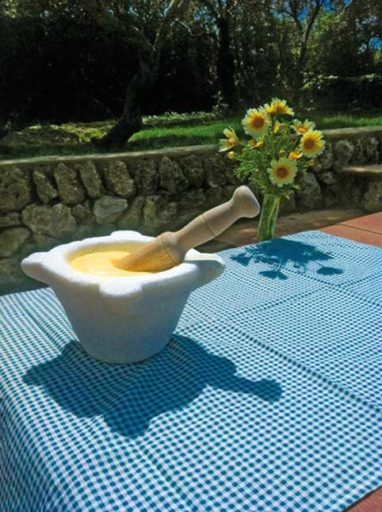

ХОРОШАЯ ЕДА – ХОРОШЕЕ НАСТРОЕНИЕ
Хорошо поесть во время путешествия – одно из тех удовольствий, в котором нельзя себе отказывать. Еда много говорит о месте, и меноркинская кухня, как продолжение островного характера, аутентична, проста, но полна оттенков. Не такова ли и сама Менорка?
Рестораны Менорки полны идей, как угодить вашим вкусам. Обязательно попробуйте типичные блюда острова. Вариантов много и для любого кошелька. Меноркинские повара – эксперты в приготовлении рыбы, которую ловят в тот же день. Свежая рыба всегда на виду в ресторанах, поинтересуйтесь о ней у официанта, также как о манере приготовления: обжаренной на противне или запеченной в духовке. Откройте для себя золотистую скорпену или морского ерша (cap-roig), а также солнечника или джон дори (gallo de San Pedro). Закажите фаршированного кальмара по-меноркински. Вы будете приятно удивлены…
Говоря о гастрономии острова, надо выделить самое знаменитое блюдо – суп из омара, уникальный деликатес, приготовленный из свежих, выловленных на Менорке, омаров. Блюдо это не дешевое, но его стоит попробовать хотя бы один раз и лучше всего, сидя у моря под аккомпанемент меноркинского белого вина.
 Меноркинцы также хорошо умеют использовать продукты своей земли. Скромная кухня, в прошлом служившая для выживания, показала себя полной вкуса и разнообразия. Попробуйте олиайгу (oliaigua) со свежим инжиром, вероятно, самое меноркинское блюдо из всех существующих. На хорошем счету запеченные фаршированные баклажаны, еда, крестьянская по происхождению, но отвечающая самым изысканным вкусам.
Меноркинцы также хорошо умеют использовать продукты своей земли. Скромная кухня, в прошлом служившая для выживания, показала себя полной вкуса и разнообразия. Попробуйте олиайгу (oliaigua) со свежим инжиром, вероятно, самое меноркинское блюдо из всех существующих. На хорошем счету запеченные фаршированные баклажаны, еда, крестьянская по происхождению, но отвечающая самым изысканным вкусам.
Островитяне сладкоежки, и позаботились о десертах: сладкая выпечка, нежное песочное печенье (pastissets), с джемом (crespells), миндальное (amargos) или бизе (carquinyols). Эти сладости прекрасно подходят к завтраку или чтобы побаловать себя в середине дня. Вы найдете их в любой кондитерской и булочной острова, где также большой выбор соленой выпечки, например, пирожки с мясной начинкой (formatjades).
Для любителей плотных десертов есть изысканный миндальный пирог. И если добавить к нему шарик ванильного мороженого, комбинация получается Нам не достаточно пространства на этих страницах, чтобы подробно поговорить о местных продуктах таких как меноркинский сыр, колбасы, вино, мед, ликеры… Как видите, жизнь на острове хорошая, но еда здесь еще лучше.